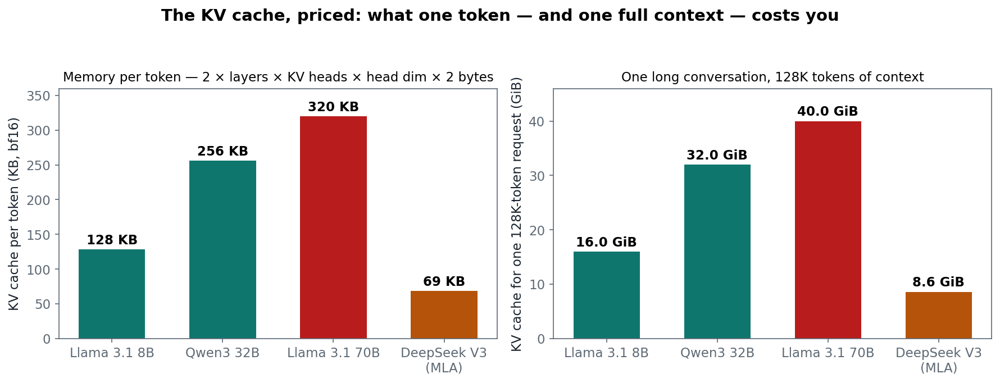
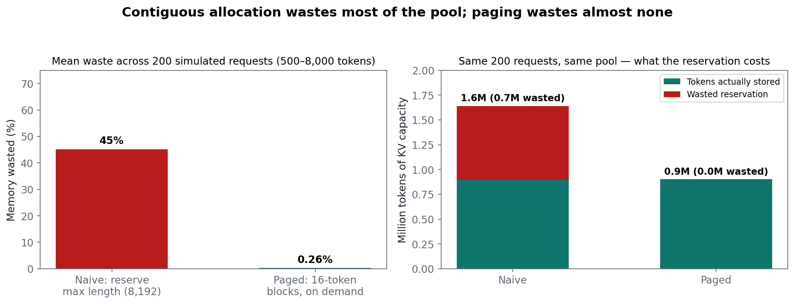
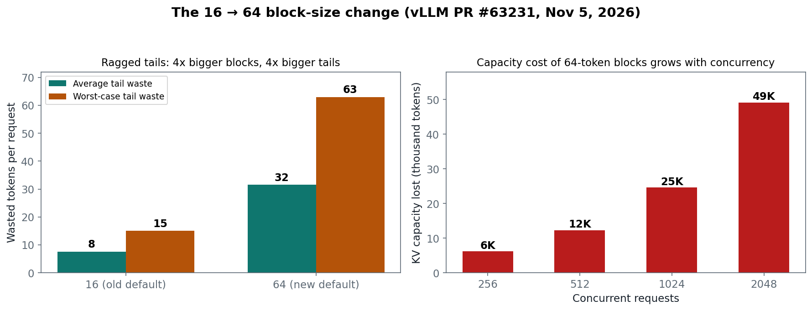
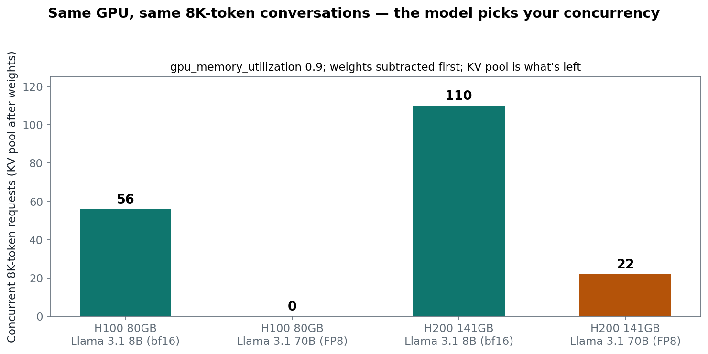

One 128K-token conversation with a 70B model needs 40 GiB of GPU memory — not for the weights, for the memory of the conversation itself. An 8B model on the same GPU fits 56 such conversations at once; the 70B model in FP8 fits zero. Same GPU, same 8K-token chats, and the difference is not speed. It is memory. Every LLM serving decision you will ever make is downstream of this one fact: the KV cache, not the FLOPs, caps your concurrency.
The fix has a name you have heard a hundred times and a mechanism most people never actually work through: PagedAttention. It treats the KV cache like an operating system treats virtual memory — fixed-size pages, allocated on demand, freed the moment a request ends. The 2023 paper behind it reports 2–4x higher throughput at the same latency, with memory waste falling from 60–80% to under 4%.
And the ground just shifted under it. On November 5, 2026 — five days ago — vLLM merged PR #63231, changing the default block size from 16 tokens to 64. The number every tutorial teaches is now the old number. This post does the arithmetic the new default demands: what a token costs, what fragmentation actually wastes, what the 16→64 change costs you at scale, and how many conversations your GPU can really hold.
This is post #2 of a 25-post series on the Google AI stack — vLLM serving first, then JAX/Keras/Gemma, Google's Agent Development Kit, and Vertex AI — written for the Google Developer Expert AI track. One concept per post, concrete numbers, a runnable notebook. Yesterday: what vLLM 0.33 changed. Today: the memory system underneath all of it.
The ELI5 version
A language model reads your prompt one token at a time, and to generate the next token it needs to look back at everything it has already seen. Recomputing that from scratch every step would be absurdly slow, so the model takes notes: for every token, in every layer, it writes down two small vectors — a key and a value. Together they are the KV cache. The next token is produced by comparing the new token against all those notes.
Three things follow, and they explain everything in this post:
The notes grow with the conversation. Every token adds notes in every layer. A 70B model writes 320 KB of notes per token, so a 128,000-token conversation accumulates 40 GiB of notes. The model itself is 140 GiB in bf16 — the notes for one long conversation are nearly a third of the model.
The notes are the memory, not the model. Weights are fixed; the KV cache grows with your users. Double the context length or double the concurrent users and the cache doubles. The GPU's FLOPs sit idle while requests wait for a free page of cache memory. That is why serving is a memory problem wearing a compute costume.
The notes used to be stored wastefully. The naive approach reserves the maximum possible notes for every request up front — a full 8,192-token slab for a request that might end at 500 tokens — and in one contiguous block, so variable-length requests leave unusable gaps. PagedAttention borrows the operating system's oldest trick: split memory into fixed-size pages (blocks of 16 tokens, now 64), hand them out as tokens arrive, take them back when the request ends. No reservation, no gaps.
How it works: the four numbers that decide everything
1. What one token costs
The formula is one line:
bytes per token = 2 (K and V) × layers × KV heads × head dimension × bytes per value
Two design choices dominate it. Grouped-query attention (GQA) shares one key/value pair across a group of query heads — Llama 3.1 70B has 64 query heads but only 8 KV heads, so it stores 8x less than a naive design. And DeepSeek's Multi-head Latent Attention (MLA) goes further, compressing each layer's keys and values into a single 576-dimensional latent vector: 68.6 KB per token, against 320 KB for a 70B GQA model.
| Model | Layers | KV heads | KB per token (bf16) | One 128K conversation |
|---|---|---|---|---|
| Llama 3.1 8B | 32 | 8 | 128 | 16.0 GiB |
| Qwen3 32B | 64 | 8 | 256 | 32.0 GiB |
| Llama 3.1 70B | 80 | 8 | 320 | 40.0 GiB |
| DeepSeek V3 (MLA) | 61 | 1 latent | 68.6 | 8.6 GiB |
Read the last column twice. A single 128K-token conversation with a 70B model needs 40 GiB of cache — more than an entire 8B model's weights. And MLA is not a small optimization: it is a 4.7x reduction in the memory wall, which is why DeepSeek's architecture choices keep showing up in every serving discussion. The notebook recomputes every number in this table from the public model configs.

2. Fragmentation: the 60–80% tax PagedAttention removes
Before PagedAttention, serving engines allocated the KV cache the way a bad landlord rents apartments: one contiguous slab per request, sized to the maximum length, held for the request's whole life. Two kinds of waste followed. Internal fragmentation: a request that ends at 500 tokens holds an 8,192-token reservation. External fragmentation: freed slabs of different sizes leave gaps no new request quite fits. The SOSP 2023 paper measured 60–80% of KV memory wasted this way.
PagedAttention removes both by decoupling the logical cache from its physical layout. Each request gets a block table — its logical blocks mapped to physical blocks anywhere in the pool, exactly like a process's page table. A request that uses 100 tokens holds 7 blocks of 16 (the last one half-full); the rest of the pool stays available. When the request ends, its blocks return to the free list immediately. The paper's result: waste under 4%, and 2–4x the throughput at the same latency on the same hardware.
The simulation in the notebook — 200 requests, lengths uniform between 500 and 8,000 tokens, max_model_len 8,192 — lands in the same band: naive allocation wastes 45.2% of the pool on average (the exact figure depends on the length mix; the paper's 60–80% is the worst-case workload), paging wastes 0.26%, reserving 1.82x less memory for the same 200 requests.

3. The block size just changed: 16 → 64 tokens
Here is the part that makes this post time-sensitive. vLLM's default block size was 16 tokens since the PagedAttention paper — "large enough to efficiently utilize the GPU and small enough to avoid significant internal fragmentation," in the authors' words. PR #63231, merged November 5, 2026, moves the default to 64 to cut per-block bookkeeping: fewer blocks means a smaller block table, fewer kernel launches per attention step, less metadata to manage.
The cost is the ragged tail. A request's last block is almost never full, so every request wastes, on average, half a block: 7.5 tokens at block size 16, 31.5 at 64. The extra waste is 24 tokens per request — and at concurrency 1,024 that is 24,576 tokens of KV capacity gone, which is the maintainer's own estimate in the PR discussion, derived in the notebook. At 320 KB per token on a 70B model, that is about 7.5 GiB of HBM.
Three operational consequences land with the change:
- Prefix-cache hits now fall on 64-token boundaries. A shared prompt only produces reusable blocks at multiples of 64 tokens. A 40-token system prompt no longer yields a shareable block at all.
- KV connectors must use multiples of 64. A
block_sizethat isn't a multiple of 64 now fails validation at startup — configs that assumed 16 will error, not silently degrade. - ROCm keeps 16. AMD's kernel stays on the old default, so the same vLLM version now has different defaults per platform. If you run mixed fleets, pin the block size explicitly rather than relying on the default.
One honest caveat: the PR lists the 16-against-64 serving benchmark as still open. The 24K-token figure is a maintainer estimate, not a measured throughput delta. The direction of the trade is certain (less bookkeeping, more tail waste); the net throughput effect at your concurrency is not yet published. Measure it on your fleet before deciding the new default is a win for you.

4. Concurrency: the KV pool is what's left after the weights
vLLM pre-allocates a fraction of the GPU — gpu_memory_utilization, default 0.9 (0.92 in the latest docs, 1.0 with the new extensible KV cache, which sizes the pool from memory actually free after CUDA-graph capture instead of from a profiling estimate). Weights load first. Everything left is the KV block pool. Divide by the per-request cost at your context length and you have your concurrency ceiling — before a single request arrives.
| Setup | KV pool | Per 8K request | Concurrent 8K requests |
|---|---|---|---|
| H100 80GB + Llama 3.1 8B (bf16) | 56.0 GiB | 1.00 GiB | 56 |
| H100 80GB + Llama 3.1 70B (FP8) | 2.0 GiB | 2.50 GiB | 0 |
| H200 141GB + Llama 3.1 8B (bf16) | 110.9 GiB | 1.00 GiB | 110 |
| H200 141GB + Llama 3.1 70B (FP8) | 56.9 GiB | 2.50 GiB | 22 |
| B200 192GB + Llama 3.1 70B (bf16) | 32.8 GiB | 2.50 GiB | 13 |
The zero is the point. A 70B model in FP8 weighs 70 GB; on an 80 GB H100, 0.9 × 80 − 70 leaves 2 GB of pool — not enough for even one 8K-token conversation. It is not a bug, and no amount of batching fixes it: the model cannot serve a single 8K request on that card at that utilization. The remedies are a bigger GPU, a smaller model, a shorter context, or tensor parallelism across two cards. Note the B200 row too: even a 192 GB card holds only 13 concurrent 8K requests of a bf16 70B — the weights eat 140 GB before the pool even starts. Quantized weights are a concurrency decision, not just a cost decision: FP8 weights buy you 22 concurrent requests on the H200 where bf16 buys you a handful.

The state of the art: what else shares the cache
Prefix caching is PagedAttention's free second act. Because blocks are content-addressed, identical prefixes hash to the same physical blocks: a shared system prompt is stored once and referenced by every request. enable_prefix_caching defaults to True in current vLLM. The saving scales with (N−1) × prompt tokens — a 2,000-token system prompt shared across 100 concurrent requests on a 70B model saves 60.4 GiB of KV. For RAG systems, where every query carries the same retrieved documents, this is often the single biggest memory win available, and it costs nothing but keeping your prompt template byte-identical. One differing token at the start of the prompt kills the hit for the whole prefix — which is why prompt-template discipline is a serving concern, not a style concern.
The rival design is SGLang's RadixAttention. Instead of flat blocks, it organizes the cache as a radix tree indexed by token sequence, so prefixes share at token granularity and eviction follows an LRU policy over the tree. It is the better design for long shared prefixes and multi-turn chat; PagedAttention's flat blocks are simpler and remain the reference implementation every other engine copied. The choice matters less than knowing which one your engine uses — they fail differently when the pool runs dry.
When the pool runs dry anyway, vLLM preempts. The scheduler pauses the lowest-priority request and either drops its KV and recomputes it later (the default) or offloads its blocks to CPU RAM (--swap-space, default 4 GiB). Neither changes the answer; both explode that request's time-to-first-token. Preemption is the symptom. The arithmetic in section 4 is the cure.
What comes next in this lane: FP8 and NVFP4 KV-cache quantization halves the per-token cost again (GDE #6, Nov 24), and disaggregated prefill/decode splits the pool across machines (GDE #3, Friday Nov 13). The formula in section 1 is the thread through all of them — every later optimization is a way to make the same bytes/token number smaller, or the same pool hold more of them.
Why it breaks: the concurrency checklist
Most KV-cache outages are configuration, not capacity. Run this before you blame the GPU:
max_model_lenis set to the model's theoretical maximum. A 128K-capable model with an 8K workload still sizes its pool for 128K unless you cap it. Set it to the longest context you actually serve — the pool, and therefore your concurrency, grows with the difference.gpu_memory_utilizationwas raised to 1.0. The default 0.9 leaves headroom for activations and CUDA graphs. At 1.0 without the extensible KV cache, the first large activation allocation OOMs the server. The new extensible cache (0.33-era, latest docs) is the supported way to use the full card.- A KV connector still assumes block size 16. After PR #63231, connector
block_sizevalues that aren't multiples of 64 fail validation at startup. Grep your disaggregated-prefill and KV-transfer configs before upgrading past 0.33. - The prompt template drifts. Prefix caching needs byte-identical prefixes. A timestamp, a user ID, or a reordered field at the start of the prompt silently disables sharing for every request — and your pool usage doubles overnight with no code change.
- Preemption is treated as normal. Occasional preemption under burst load is fine; steady preemption means the pool is undersized for the workload. The fix is the section-4 arithmetic — smaller model, quantized weights, shorter
max_model_len, or more GPUs — not a bigger--swap-space.
Takeaways
- The KV cache, not FLOPs, caps concurrency. A 70B model writes 320 KB of notes per token; one 128K conversation is 40 GiB. Size the pool before you size the fleet.
- PagedAttention is OS paging for the KV cache. Fixed-size blocks, allocated on demand, freed on completion: waste falls from 60–80% to under 4%, throughput rises 2–4x at the same latency (SOSP 2023).
- The default block size just changed, 16 → 64. PR #63231 (Nov 5, 2026) trades less bookkeeping for 24 more wasted tokens per request — ~24K tokens of capacity at concurrency 1,024 — and moves prefix-cache hits to 64-token boundaries. Pin your block size explicitly on mixed fleets; ROCm still defaults to 16.
- Weights load first; the pool is what's left. On an H100, an 8B model serves 56 concurrent 8K chats and a 70B FP8 model serves zero. Quantization is a concurrency decision.
- Prefix caching is the cheapest memory you will ever buy. A shared 2K-token system prompt across 100 requests saves 60.4 GiB — if the template stays byte-identical.
Next in this series, Friday Nov 13: Prefill vs decode: why splitting them wins — disaggregated prefill/decode, the TTFT-vs-TPOT trade-off, and the latency split on a small model. Follow the dev.to profile to get it — and the other 22 posts in this Google AI series — as they land.
Honesty note: per-token and concurrency figures are recomputed in the companion notebook from public model configs (Llama 3.1, Qwen3, DeepSeek V3) and vLLM's documented defaults; the fragmentation simulation is a labeled toy with a stated length mix, and the paper's 60–80% waste / 2–4x throughput figures are the SOSP 2023 authors' reported results. The 16→64 block-size change (PR #63231, Nov 5, 2026) is confirmed from the PR discussion; the 24K-token capacity figure at concurrency 1,024 is a maintainer estimate, derived in the notebook, and the PR's own 16-vs-64 serving benchmark is still open — treat the net throughput effect as unmeasured, not as a win. No Meta content, per standing policy.